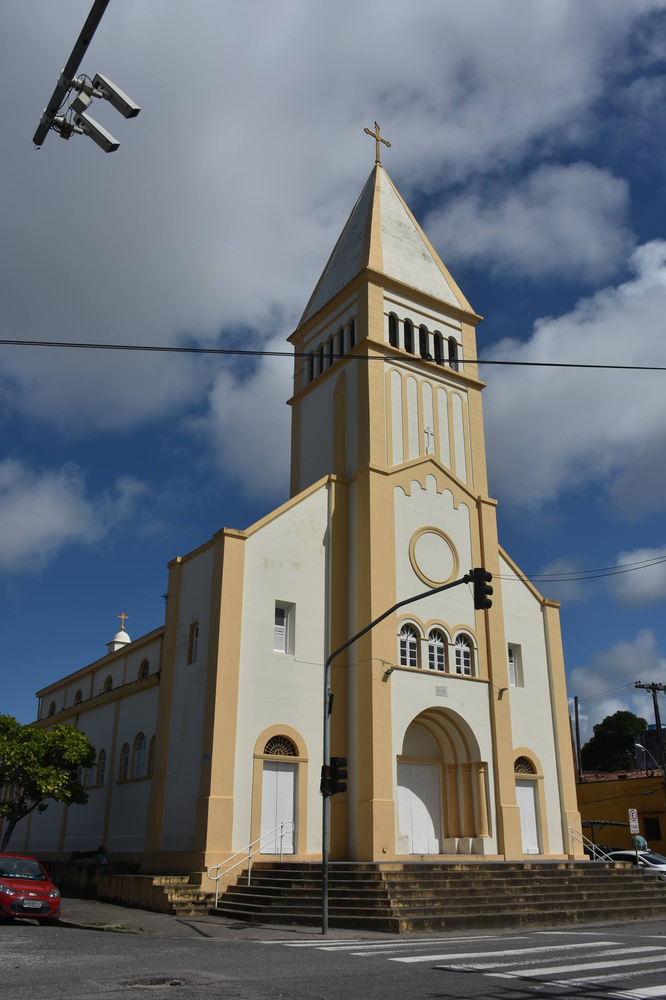
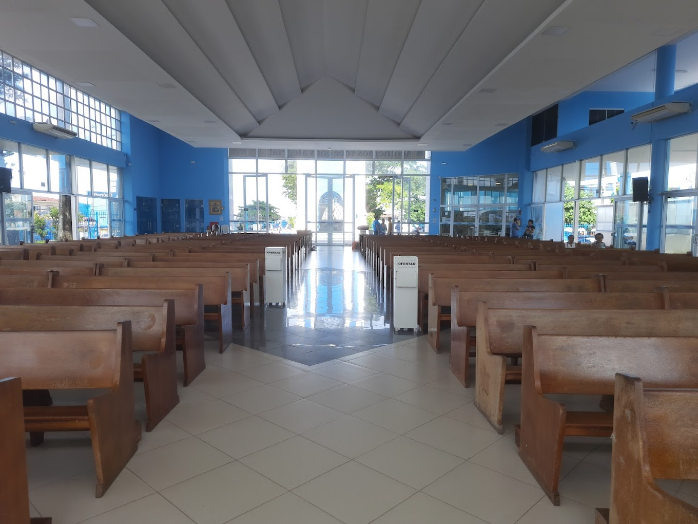

Igrejas de Recife e Região Metropolitana






A Hora da Missa é um website criado pelos estudantes Caio Brainer e Thaísa Elvas como parte de uma Atividade Extensionista da Uninter. O intuito do projeto é ter uma utilidade prática ao mostrar as principais igrejas de Recife-PE e suas informações. Na primeira versão do projeto são mostradas as informações das igrejas e também horários das missas.